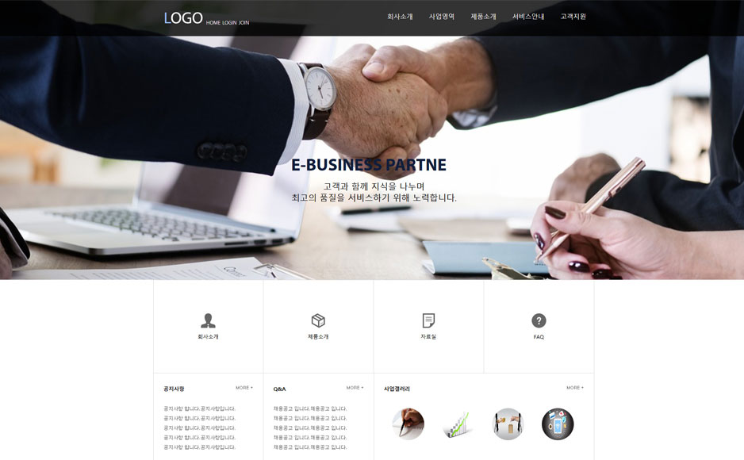

Project Site Copy:Business Main
Check out the website!
- ROLE
- Web Publisher 참여도:100%
- OVERVIEW
-
처음으로 UI 연습한 비즈니스 사이트입니다
연습많이 한
사이트 있기도 합니다
{제작기간은 2018.10}입니다.

Business Main
Project Site Copy:Business sub
Check out the website!
- ROLE
- Web Publisher 참여도:100%
- OVERVIEW
-
이 사이트도 사이트 메인 과 함께하던
서브 사이트 입니다.
서브는 먼저 하고 그 다음 메인을 만들었습니다
서브는 그나마
쉬웠던 연습 사이트였습니다.
{제작 기간은 2018.10}입니다.
Business sub
Project Site Copy:Suri
Check out the website!
- ROLE
- Web Publisher 참여도:100%
- OVERVIEW
-
이 사이트는 제가 공익 시절 때 근무한 복지관입니다 개인적으로
좋아하는 복지관입니다
그래서
더조은컴퓨터학원에 와서 카피해보자는 생각에 이 사이트 카피했습니다.
{제작 기간은 2018.10}입니다.
안양수리장애인종합복지관
Project Site Copy:Greenvillage
Check out the website!
- ROLE
- Web Publisher 참여도:100%
- OVERVIEW
-
이 사이트가 마지막으로 카피한 사이트는 초록마을입니다 이 사이트를 카피한 건 한번 도전 하고싶은
사이트였기에 카피했습니다. 처음 UI 잡을 때 힘들었지만 다 완성하고 보니 뿌듯했습니다
{제작 기간은 2018.11}입니다.
 초록마을
초록마을